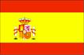
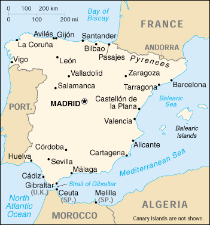

{kind=link}


| Spain |  |
|
|  | |
| Introduction |
Background: Spain's powerful world empire of the 16th and 17th centuries ultimately yielded command of the seas to England. Subsequent failure to embrace the mercantile and industrial revolutions caused the country to fall behind Britain, France, and Germany in economic and political power. Spain remained neutral in World Wars I and II, but suffered through a devastating Civil War (1936-39). In the second half of the 20th century, it has played a catch-up role in the western international community. Continuing concerns are large-scale unemployment and the Basque separatist movement.
| Geography |
Location: Southwestern Europe, bordering the Bay of Biscay, Mediterranean Sea, North Atlantic Ocean, and Pyrenees Mountains, southwest of France
Geographic coordinates: 40 00 N, 4 00 W
Map references: Europe
Area:
total:
504,782 sq km
land:
499,542 sq km
water:
5,240 sq km
note:
includes Balearic Islands, Canary Islands, and five places of sovereignty (plazas de soberania) on and off the coast of Morocco - Ceuta, Melilla, Islas Chafarinas, Penon de Alhucemas, and Penon de Velez de la Gomera
Area - comparative: slightly more than twice the size of Oregon
Land boundaries:
total:
1,917.8 km
border countries:
Andorra 63.7 km, France 623 km, Gibraltar 1.2 km, Portugal 1,214 km, Morocco (Ceuta) 6.3 km, Morocco (Melilla) 9.6 km
Coastline: 4,964 km
Maritime claims:
contiguous zone:
24 nm
exclusive economic zone:
200 nm (applies only to the Atlantic Ocean)
territorial sea:
12 nm
Climate: temperate; clear, hot summers in interior, more moderate and cloudy along coast; cloudy, cold winters in interior, partly cloudy and cool along coast
Terrain: large, flat to dissected plateau surrounded by rugged hills; Pyrenees in north
Elevation extremes:
lowest point:
Atlantic Ocean 0 m
highest point:
Pico de Teide (Tenerife) on Canary Islands 3,718 m
Natural resources: coal, lignite, iron ore, uranium, mercury, pyrites, fluorspar, gypsum, zinc, lead, tungsten, copper, kaolin, potash, hydropower, arable land
Land use:
arable land:
30%
permanent crops:
9%
permanent pastures:
21%
forests and woodland:
32%
other:
8% (1993 est.)
Irrigated land: 34,530 sq km (1993 est.)
Natural hazards: periodic droughts
Environment - current issues: pollution of the Mediterranean Sea from raw sewage and effluents from the offshore production of oil and gas; water quality and quantity nationwide; air pollution; deforestation; desertification
Environment - international agreements:
party to:
Air Pollution, Air Pollution-Nitrogen Oxides, Air Pollution-Sulphur 94, Air Pollution-Volatile Organic Compounds, Antarctic-Environmental Protocol, Antarctic Treaty, Biodiversity, Climate Change, Endangered Species, Environmental Modification, Hazardous Wastes, Law of the Sea, Marine Dumping, Marine Life Conservation, Nuclear Test Ban, Ozone Layer Protection, Ship Pollution, Tropical Timber 83, Tropical Timber 94, Wetlands, Whaling
signed, but not ratified:
Air Pollution-Persistent Organic Pollutants, Climate Change-Kyoto Protocol, Desertification
Geography - note: strategic location along approaches to Strait of Gibraltar
| People |
Population: 39,996,671 (July 2000 est.)
Age structure:
0-14 years:
15% (male 3,046,379; female 2,866,712)
15-64 years:
68% (male 13,702,947; female 13,618,766)
65 years and over:
17% (male 2,830,607; female 3,931,260) (2000 est.)
Population growth rate: 0.11% (2000 est.)
Birth rate: 9.22 births/1,000 population (2000 est.)
Death rate: 9.03 deaths/1,000 population (2000 est.)
Net migration rate: 0.88 migrant(s)/1,000 population (2000 est.)
Sex ratio:
at birth:
1.07 male(s)/female
under 15 years:
1.06 male(s)/female
15-64 years:
1.01 male(s)/female
65 years and over:
0.72 male(s)/female
total population:
0.96 male(s)/female (2000 est.)
Infant mortality rate: 4.99 deaths/1,000 live births (2000 est.)
Life expectancy at birth:
total population:
78.79 years
male:
75.32 years
female:
82.49 years (2000 est.)
Total fertility rate: 1.15 children born/woman (2000 est.)
Nationality:
noun:
Spaniard(s)
adjective:
Spanish
Ethnic groups: composite of Mediterranean and Nordic types
Religions: Roman Catholic 99%, other 1%
Languages: Castilian Spanish (official) 74%, Catalan 17%, Galician 7%, Basque 2%
Literacy:
definition:
age 15 and over can read and write
total population:
97%
male:
NA%
female:
NA%
| Government |
Country name:
conventional long form:
Kingdom of Spain
conventional short form:
Spain
local short form:
Espana
Data code: SP
Government type: parliamentary monarchy
Capital: Madrid
Administrative divisions:
17 autonomous communities (comunidades autonomas, singular - comunidad autonoma); Andalucia, Aragon, Asturias, Baleares (Balearic Islands), Canarias (Canary Islands), Cantabria, Castilla-La Mancha, Castilla y Leon, Cataluna, Communidad Valencian, Extremadura, Galicia, La Rioja, Madrid, Murcia, Navarra, Pais Vasco (Basque Country)
note:
there are five places of sovereignty on and off the coast of Morocco: Ceuta and Melilla are administered as autonomous communities; Islas Chafarinas, Penon de Alhucemas, and Penon de Velez de la Gomera are under direct Spanish administration
Independence: 1492 (expulsion of the Moors and unification)
National holiday: National Day, 12 October
Constitution: 6 December 1978, effective 29 December 1978
Legal system: civil law system, with regional applications; does not accept compulsory ICJ jurisdiction
Suffrage: 18 years of age; universal
Executive branch:
chief of state:
King JUAN CARLOS I (since 22 November 1975); Heir Apparent Prince FELIPE, son of the monarch, born 30 January 1968
head of government:
President of the Government Jose Maria AZNAR Lopez (since 5 May 1996); First Vice President Francisco ALVAREZ CASCOS Fernandez (since 5 May 1996) and Second Vice President (and Minister of Economy and Finance) Rodrigo RATO Figaredo (since 5 May 1996)
cabinet:
Council of Ministers designated by the president
note:
there is also a Council of State that is the supreme consultative organ of the government
elections:
the monarch is hereditary; president proposed by the monarch and elected by the National Assembly following legislative elections; election last held 12 March 2000 (next to be held NA 2004); vice presidents appointed by the monarch on proposal of the president
election results:
Jose Maria AZNAR Lopez (PP) elected president; percent of National Assembly vote - 44%
Legislative branch:
bicameral; General Courts or National Assembly or Las Cortes Generales consists of the Senate or Senado (259 seats - 208 members directly elected by popular vote and the other 51 appointed by the regional legislatures to serve four-year terms) and the Congress of Deputies or Congreso de los Diputados (350 seats; members are elected by popular vote on block lists by proportional representation to serve four-year terms)
elections:
Senate - last held 12 March 2000 (next to be held NA March 2004); Congress of Deputies - last held 12 March 2000 (next to be held NA March 2004)
election results:
Senate - percent of vote by party - NA; seats by party - PP 127, PSOE 61, CiU 8, PNV 6, CC 5, PIL 1; Congress of Deputies - percent of vote by party - PP 44.5%, PSOE 34%, CiU 4.2%, IU 5.4%, PNV 1.5%, CC 1%, BNG 1.3%; seats by party - PP 183, PSOE 125, CiU 15, IU 8, PNV 7, CC 4, BNG 3, other 5
Judicial branch: Supreme Court or Tribunal Supremo
Political parties and leaders: Basque Nationalist Party or PNV [Xabier ARZALLUS Antia]; Canarian Coalition or CC (a coalition of five parties) [Lorenzo OLLARTE Cullen]; Convergence and Union or CiU [Jordi PUJOL i Soley, secretary general] (a coalition of the Democratic Convergence of Catalonia or CDC [Jordi PUJOL i Soley] and the Democratic Union of Catalonia or UDC [Josep Antoni DURAN y LLEIDA]); Galician Nationalist Bloc or BNG [Xose Manuel BEIRAS]; Party of Independents from Lanzarote or PIL [leader NA]; Popular Party or PP [Jose Maria AZNAR Lopez]; Spanish Communist Party or PCE [Francisco FRUTOS]; Spanish Socialist Workers Party or PSOE [Joaquin ALMUNIA Amann, secretary general]; United Left or IU (a coalition of parties including the PCE and other small parties) [Francisco FRUTOS]
Political pressure groups and leaders: business and landowning interests; Catholic Church; Euskal Herritarok or EH [Herri BATASUNA]; free labor unions (authorized in April 1977); on the extreme left, the Basque Fatherland and Liberty or ETA and the First of October Antifascist Resistance Group or GRAPO use terrorism to oppose the government; Opus Dei; Socialist General Union of Workers or UGT and the smaller independent Workers Syndical Union or USO; university students; Workers Confederation or CC.OO
International organization participation: AfDB, AsDB, Australia Group, BIS, CCC, CE, CERN, EAPC, EBRD, ECE, ECLAC, EIB, EMU, ESA, EU, FAO, IADB, IAEA, IBRD, ICAO, ICC, ICFTU, ICRM, IDA, IEA, IFAD, IFC, IFRCS, IHO, ILO, IMF, IMO, Inmarsat, Intelsat, Interpol, IOC, IOM (observer), ISO, ITU, LAIA (observer), NATO, NEA, NSG, OAS (observer), OECD, OPCW, OSCE, PCA, UN, UNCTAD, UNESCO, UNHCR, UNIDO, UNMIBH, UNMIK, UNTAET, UNU, UPU, WCL, WEU, WHO, WIPO, WMO, WToO, WTrO, ZC
Diplomatic representation in the US:
chief of mission:
Ambassador Antonio OYARZABAL MARCHESI
chancery:
2375 Pennsylvania Avenue NW, Washington, DC 20037
telephone:
[1] (202) 452-0100, 728-2340
FAX:
[1] (202) 833-5670
consulate(s) general:
Boston, Chicago, Houston, Los Angeles, Miami, New Orleans, New York, San Francisco, and San Juan (Puerto Rico)
Diplomatic representation from the US:
chief of mission:
Ambassador Edward L. ROMERO
embassy:
Serrano 75, 28006 Madrid
mailing address:
APO AE 09642
telephone:
[34] (91) 587-2200
FAX:
[34] (91) 587-2303
consulate(s) general:
Barcelona
Flag description: three horizontal bands of red (top), yellow (double width), and red with the national coat of arms on the hoist side of the yellow band; the coat of arms includes the royal seal framed by the Pillars of Hercules, which are the two promontories (Gibraltar and Ceuta) on either side of the eastern end of the Strait of Gibraltar
| Economy |
Economy - overview: Spain's mixed capitalist economy supports a GDP that on a per capita basis is three-fourths that of the four leading West European economies. Its center-right government successfully worked to gain admission to the first group of countries launching the European single currency on 1 January 1999. The AZNAR administration has continued to advocate liberalization, privatization, and deregulation of the economy and has introduced some tax reforms to that end. Unemployment, nonetheless, remains the highest in the EU at 16%. The government, for political reasons, has made only limited progress in changing labor laws or reforming pension schemes, which are key to the sustainability of both Spain's internal economic advances and its competitiveness in a single currency area. Adjustment to the monetary and other economic policies of an integrated Europe - and reducing the unacceptably high level of unemployment - will pose difficult challenges to Spain in the next few years.
GDP: purchasing power parity - $677.5 billion (1999 est.)
GDP - real growth rate: 3.6% (1999 est.)
GDP - per capita: purchasing power parity - $17,300 (1999 est.)
GDP - composition by sector:
agriculture:
3.2%
industry:
33.6%
services:
63.2% (1998 est.)
Population below poverty line: NA%
Household income or consumption by percentage share:
lowest 10%:
2.8%
highest 10%:
25.2% (1990)
Inflation rate (consumer prices): 2.3% (1999 est.)
Labor force: 16.2 million (1997 est.)
Labor force - by occupation: services 64%, manufacturing, mining, and construction 28%, agriculture 8% (1997 est.)
Unemployment rate: 16% (1999 est.)
Budget:
revenues:
$115 billion
expenditures:
$125 billion, including capital expenditures of $NA (1998 est.)
Industries: textiles and apparel (including footwear), food and beverages, metals and metal manufactures, chemicals, shipbuilding, automobiles, machine tools, tourism
Industrial production growth rate: 2.7% (1999 est.)
Electricity - production: 179.468 billion kWh (1998)
Electricity - production by source:
fossil fuel:
48.23%
hydro:
19.16%
nuclear:
31.23%
other:
1.38% (1998)
Electricity - consumption: 170.306 billion kWh (1998)
Electricity - exports: 5.6 billion kWh (1998)
Electricity - imports: 9 billion kWh (1998)
Agriculture - products: grain, vegetables, olives, wine grapes, sugar beets, citrus; beef, pork, poultry, dairy products; fish
Exports: $112.3 billion (f.o.b., 1999 est.)
Exports - commodities: machinery, motor vehicles; foodstuffs, other consumer goods
Exports - partners: EU 72% (France 20%, Germany 14%, Italy 9%, Portugal 9%, UK 8%), Latin America 7%, US 4% (1998)
Imports: $137.5 billion (f.o.b., 1999 est.)
Imports - commodities: machinery and equipment, fuels, chemicals, semifinished goods; foodstuffs, consumer goods (1997)
Imports - partners: EU 67% (France 18%, Germany 15%, Italy 10%, UK 8%, Benelux 8%), US 6%, OPEC 5%, Japan 3%, Latin America 4% (1998)
Debt - external: $90 billion (1993 est.)
Economic aid - donor: ODA, $1.3 billion (1995)
Currency: 1 peseta (Pta) = 100 centimos
Exchange rates:
euros per US$1 - 0.9867 (January 2000), 0.9386 (1999); pesetas (Ptas) per US$1 - 143.39 (January 1999), 149.40 (1998), 146.41 (1997), 126.66 (1996), 124.69 (1995)
note:
on 1 January 1999, the EU introduced a common currency that is now being used by financial institutions in some member countries at a fixed rate of 166.386 pesetas per euro; the euro will replace the local currency in consenting countries for all transactions in 2002
Fiscal year: calendar year
| Communications |
Telephones - main lines in use: 17.336 million (1999)
Telephones - mobile cellular: 8.394 million (1999)
Telephone system:
generally adequate, modern facilities
domestic:
NA
international:
22 coaxial submarine cables; satellite earth stations - 2 Intelsat (1 Atlantic Ocean and 1 Indian Ocean), NA Eutelsat; tropospheric scatter to adjacent countries
Radio broadcast stations: AM 208, FM 715, shortwave 1 (1998)
Radios: 13.1 million (1997)
Television broadcast stations: 228 (plus 2,112 repeaters); note - these figures include 11 television broadcast stations and 89 repeaters in the Canary Islands (September 1995)
Televisions: 16.2 million (1997)
Internet Service Providers (ISPs): 49 (1999)
| Transportation |
Railways:
total:
13,950 km
broad gauge:
12,781 km 1.668-m gauge (6,358 km electrified; 2,295 km double track)
standard gauge:
525 km 1.435-m gauge (525 km electrified)
narrow gauge:
644 km 1.000-m gauge (438 km electrified) (1998)
Highways:
total:
346,858 km
paved:
343,389 km (including 9,063 km of expressways)
unpaved:
3,469 km (1997 est.)
Waterways: 1,045 km, but of minor economic importance
Pipelines: crude oil 265 km; petroleum products 1,794 km; natural gas 1,666 km
Ports and harbors: Aviles, Barcelona, Bilbao, Cadiz, Cartagena, Castellon de la Plana, Ceuta, Huelva, La Coruna, Las Palmas (Canary Islands), Malaga, Melilla, Pasajes, Gijon, Santa Cruz de Tenerife (Canary Islands), Santander, Tarragona, Valencia, Vigo
Merchant marine:
total:
130 ships (1,000 GRT or over) totaling 1,131,648 GRT/1,688,996 DWT
ships by type:
bulk 11, cargo 24, chemical tanker 9, container 9, liquified gas 2, livestock carrier 1, passenger 1, petroleum tanker 24, refrigerated cargo 5, roll-on/roll-off 36, short-sea passenger 7, specialized tanker 1 (1999 est.)
Airports: 105 (1999 est.)
Airports - with paved runways:
total:
70
over 3,047 m:
15
2,438 to 3,047 m:
11
1,524 to 2,437 m:
17
914 to 1,523 m:
17
under 914 m:
10 (1999 est.)
Airports - with unpaved runways:
total:
35
1,524 to 2,437 m:
1
914 to 1,523 m:
9
under 914 m:
25 (1999 est.)
Heliports: 2 (1999 est.)
| Military |
Military branches: Army, Navy, Air Force, Marines, Civil Guard, National Police, Coastal Civil Guard
Military manpower - military age: 20 years of age
Military manpower - availability:
males age 15-49:
10,569,785 (2000 est.)
Military manpower - fit for military service:
males age 15-49:
8,481,690 (2000 est.)
Military manpower - reaching military age annually:
males:
295,335 (2000 est.)
Military expenditures - dollar figure: $6 billion (FY97)
Military expenditures - percent of GDP: 1.1% (FY97)
| Transnational Issues |
Disputes - international: Gibraltar issue with UK; Spain controls five places of sovereignty (plazas de soberania) on and off the coast of Morocco - the coastal enclaves of Ceuta and Melilla, which Morocco contests, as well as the islands of Penon de Alhucemas, Penon de Velez de la Gomera, and Islas Chafarinas
Illicit drugs: key European gateway country for Latin American cocaine and North African hashish entering the European market; transshipment point for and consumer of Southwest Asian heroin